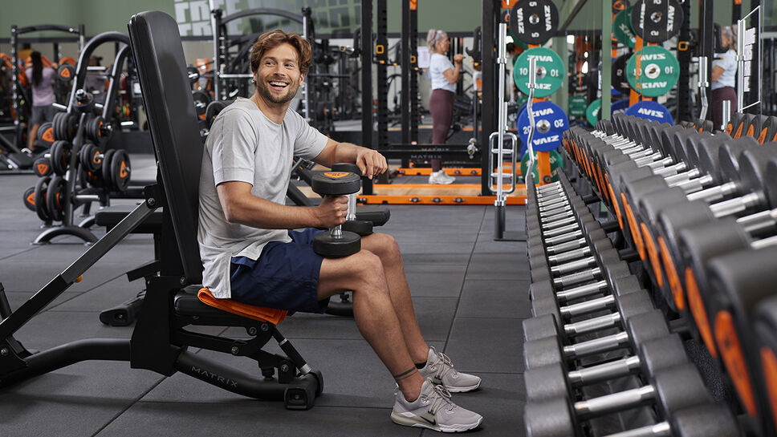
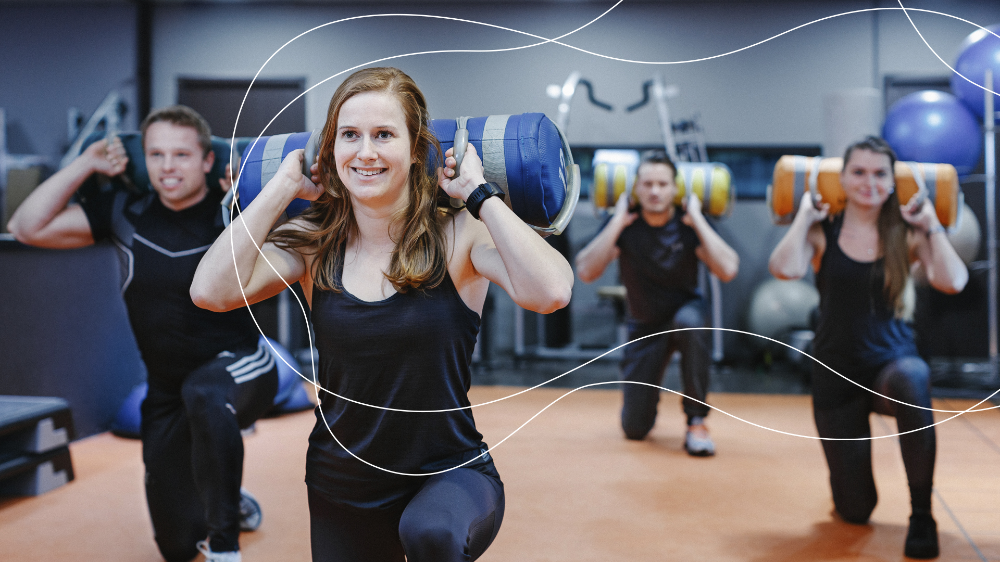

Fitness
Ben jij een sprotief persoon? Wil jij graag binnen sporten? Kom dan naar de fitness dag van Ik hou van hobby's
je begint met een rustige warm-up. daarna ga je echt beginnen met de actieviteiten waaronder legpress,loopband,de smith machine,
de fly machine,de pulldownr machine, de hyperextension bench,de preacher curl machine,chest press machine,de shoulder press,dip machine,
cable crossover.
Er zijn 4 tijden waarop je kan meedoen. In de ochtend van 6:00/10:00 dan is er ook van 12:00/16:00 ook is er 17:00/21:00 en als laatst 23:00/3:00.
Er zijn verschillende locaties zo je kan kiezen wat het beste voor jou uitkomt of welke jij het liefts hebt.
Ook zijn er verschillende betaal mogelijkheden.Je kunt 10.- per maand betalen of je betaald 100.- voor een jaar lang.
Er zal ook altijd een trainer aanwezing zijn om je te helpen waneer dat nodig is of als je gewoon iemand erbij wil hebben.
Soeple en comfortable kleren worden aangeraden voor uw eigen gemak.
Mochten er nog vragen zijn of opmerking waar mee we rekening mee moeten houden neem dan even contact met ons op informatie op de ce contact pagina

